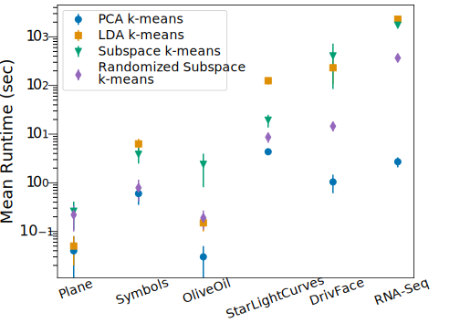

Clustering in High Dimensions
Subspace k-means
Subspace k-means
- transforms data into a cluster subspace and a noise subspace
- alternates between subspace estimation and clustering
cluster subspace
noise subspace
Objective Function
\(\mathcal{J} = \bigg[\sum_{i=1}^k \sum_{\mathbf{x} \in C_i} ||\) \(P_C^T\) \(V^T\) \(\mathbf{x} - \) \(P_C^T\) \(V^T\) \(\boldsymbol{\mu}_i||^2 \bigg]\) \(+\sum_{\mathbf{x \in \mathcal{D}}} ||\) \(P_N^T\) \(V^T\) \(\mathbf{x} - \) \(P_N^T\) \(\boldsymbol{\mu}_{\mathcal{D}}||^2\)\(P_C \equiv\) cluster space projection matrix
\(P_N \equiv\) noise space projection matrix
\(V \equiv\) transformation matrix
Objective Function
\begin{align} \mathcal{J} = &\text{tr} \bigg( P_C P_C^T V^T \underbrace{\bigg( \bigg[ \sum_{i=1}^k S_i \bigg] - S_{\mathcal{D}} \bigg)}_{ \Sigma} V \bigg) \\ &+ \underbrace{\text{tr} (V^T S_{\mathcal{D}} V)}_{\text{const. w.r.t } V} \end{align}\(S_i\equiv \) cluster scatter matrix
\(S_\mathcal{D} \equiv \) dataset scatter matrix
Minimization
\(\mathcal{J} = \text{tr} \bigg( P_C P_C^T V^T \underbrace{\bigg( \bigg[ \sum_{i=1}^k S_i \bigg] - S_{\mathcal{D}} \bigg)}_{ \Sigma} V \bigg) \dots \)- put eigenvectors of \(\Sigma\) into \(V\) in ascending order
- keep the negative eigenvalues via \(P_C P_C^T\)
Computational Complexity
\(\mathcal{O}\big(\) \(I\) \((\) \(mk |\mathcal{D}|\) \(+\) \(d^2 |\mathcal{D}|\) \(+ \) \(d^3\) \()\big)\)k-means
scatter matrix
eigenvalue decomposition
Randomized Subspace k-means
Transformation Matrix Approximation
- \(P_C P_C^T\) only keeps the first \(m\) eigenvalues
- compute rank-\(m\) approximation, \(\widetilde{V}\), using a randomized eigenvalue decomposition
Computational Complexity
before:
\(\mathcal{O}\big(I(mk |\mathcal{D}| + d^2 |\mathcal{D}| + \) \(d^3\) \()\big)\)after:
\(\mathcal{O}\big(I(mk |\mathcal{D}| + d^2 |\mathcal{D}| + \) \(d^2 \log m\) \()\big)\)Experiments
Synthetic Data
- runtime vs dimensions
- runtime vs instances
Real Datasets
- clustering quality
- runtime
Algorithms
- Subspace k-means
- Randomized Subspace k-means
- PCA k-means
- LDA k-means
Datasets
| Features | Instances | Classes | |
|---|---|---|---|
| Plane | 114 | 210 | 7 |
| Symbols | 398 | 1020 | 6 |
| OliveOil | 570 | 60 | 4 |
| StarLightCurves | 1024 | 9236 | 3 |
| DrivFace | 6400 | 606 | 3 |
| RNA-Seq | 20531 | 801 | 5 |
Results
Runtime vs Dimension


Runtime vs Size


Dataset Runtimes


Clustering Quality (NMI)
| Randomized Subspace k-means | Subspace k-means | PCA k-means | LDA k-means | |
|---|---|---|---|---|
| Plane | 0.835 | 0.825 | 0.804 | 0.728 |
| Symbols | 0.788 | 0.742 | 0.762 | 0.745 |
| OliveOil | 0.609 | 0.657 | 0.673 | 0.690 |
| StarLight Curves |
0.546 | 0.542 | 0.507 | 0.542 |
| DrivFace | 0.191 | 0.205 | 0.203 | 0.209 |
| RNA-Seq | 0.659 | 0.679 | 0.680 | 0.668 |
Subspace Projections
Conclusions
Questions?
NMI
\[NMI(C, T)] = \frac{I(C,T)}{\sqrt{H(C) H(T)}}\]\(C \equiv\) cluster assignments
\(T \equiv\) ground truth
\(I(C,T) \equiv \) mutual information
\(H(C) \equiv \) entropy of cluster assignments
\(H(T) \equiv \) entropy of ground truth
Randomized EVD
Approximate range: \(Y = A \Omega\)
Obtain orthonormal basis: \(Y = QR\)
Factorize: \(A \approx QQ^*A\)
EVD on \(B = Q^* A\)